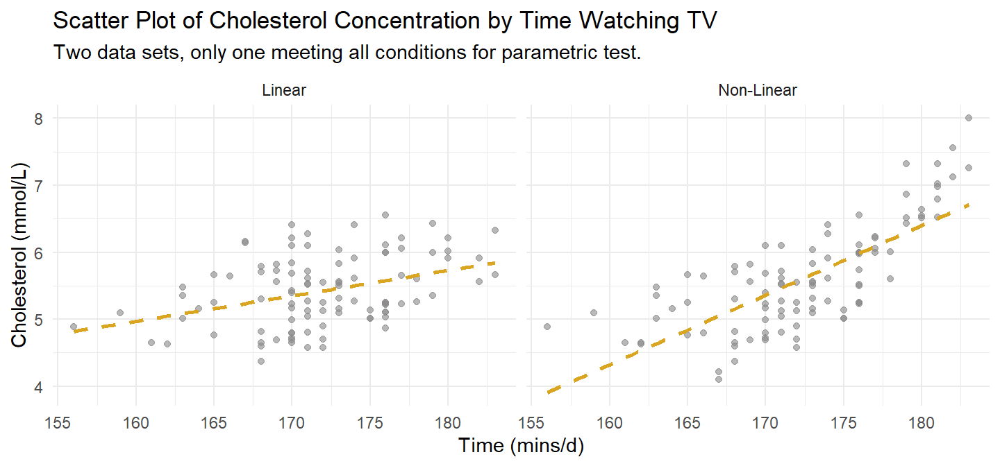
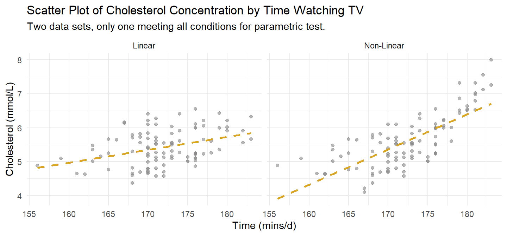

dat1. It meets Pearson’s linearity condition. A second version at right illustrates what a failure might look like.
Tests of association assess the strength of association between two variables. There are many variations on this theme.
Pearson’s correlation assesses the strength of a linear relationship between two continuous variables. It applies when the relationship is linear with no outliers and the variables are bi-variate normal. There are two less restrictive alternatives, Spearman’s rho and Kendall’s tau, that assess the strength and direction of association.
A two-way frequency table is a frequency table for two categorical variables. You usually construct a two-way table to test whether the frequency counts in one categorical variable differ from the other categorical variable using the chi-square test for independence or G-test, or Fisher’s exact test. If there is a significant difference (i.e., the variables are related), then describe the relationship with an analysis of the residuals, calculations of measures of association (difference in proportions, Phi and Cramer’s V, Relative risks, or Odds Ratio), and partition tests.
If one of the variables is bivariate categorical, use point-biserial correlation, a special case of Pearson’s correlation. Pearson’s partial correlation controls for one or more variables - linear regression?
If both variables are ordinal, use Goodman and Kruskal’s gamma. Somers’ d is an alternative if you want to distinguish between a dependent and independent variable (instead of linear regression?). The Mantel-Haenszel test of trend is used to determine whether there is a linear trend (i.e., a linear relationship/association) between two ordinal variables that are represented in a contingency table. The Cochran-Armitage test of trend is used to determine whether there is a linear trend (i.e., a linear relationship/association) between an ordinal independent variable and a dichotomous dependent variable.
Goodman and Kruskal’s λ is a nonparametric measure of the strength of association between two nominal variables where a distinction is made between a dependent and independent variable
Loglinear analysis is used to understand (and model) associations between two or more categorical variables (i.e., nominal or ordinal variables). However, loglinear analysis is usually employed when dealing with three or more categorical variables, as opposed to two variables, where a chi-square test for association is usually conducted instead.
There are three common correlation tests for categorical variables1: Tetrachoric correlation for binary categorical variables; polychoric correlation for ordinal categorical variables; and Cramer’s V for nominal categorical variables.
The Pearson product-moment correlation measures the strength and direction of a linear relationship between two continuous variables, x and y. The Pearson correlation coefficient, r, ranges from -1 (perfect negative linear relationship) to +1 (perfect positive linear relationship). A value of 0 indicates no relationship between two variables.
\[r_{x,y} = \frac{\text{Cov}(x,y)}{\text{SD}(x) \text{SD}(y)}\]
The statistic can be used as an estimate of the population correlation, \(\rho\), in a test of statistical significance from 0 (H0: \(\rho\) = 0).
\[\rho_{X,Y} = \frac{\text{Cov}(X,Y)}{\text{SD}(X) \text{SD}(Y)}\]
As rule of thumb, \(|r|\) <.1 is no correlation, [.1, .3) is small, [.3, .5) is moderate, and [.5, 1.0] is strong. The test statistic follows a t-distribution with n − 2 degrees of freedom.
\[t = r_{x,y} \sqrt{\frac{n - 2}{1 - r^2_{x,y}}}\]
Spearman’s ranked correlation (Spearman’s rho) is a measure of the strength and direction of a monotonic relationship between two variables that are at least ordinal. Spearman’s correlation is a non-parametric alternative to Pearson when one or more of its conditions are violated. Unlike Pearson, the relationship need not be linear (it only needs to be monotonic), and has no outliers or bivariate normality conditions.
Spearman’s correlation is Pearson’s correlation applied to the ranks of variables (for ordinal variables, their value already is a rank). However, there is also a second definition that gives the same result, at least when there are no ties in the ranks:
\[\rho = 1 - \frac{6 \sum_i d^2_i}{n(n^2 - 1)}\]
where \(d_i\) is the difference in ranks of observation \(i\).
Kendal’s tau is a second alternative to Pearson and is identical to Spearman’s rho with regard to assumptions. Kendal’s tau only differs from Spearman’s rho in how it measures the relationship. Whereas Spearman measures the correlation of the ranks, Kendal’s tau is a function of concordant (C), discordant (D) and tied (Tx and Ty) pairs of observations. Concordant means both X and Y in one observation of a pair are larger than in the other. Discordant means X is larger in one observation than the other while Y is smaller. Tied mean either both observations have the same X or both have the same Y.
\[\mathrm{Kendall's} \space \tau_b = \frac{C - D}{\sqrt{(C + D + T_x) \times (C + D + T_Y)}}\]
This case study works with two data sets. dat1 is composed of two continuous variables; dat2 is composed of two ordinal variables.
A researcher investigates the relationship between cholesterol concentration and time spent watching TV, time_tv, in n = 100 otherwise healthy 45 to 65 year old men (dat1). This data set will meet the conditions for Pearson, so we try all three tests on it.
A researcher investigates the relationship between the level of agreement with the statement “Taxes are too high” (tax_too_high, four level ordinal) and participant income level (three level ordinal) (dat2). The ordinal variables rule out Pearson, leaving Spearman and Kendall.
Pearson’s correlation applies when X and Y are continuous (interval or ratio) paired variables with 1) a linear relationship that 2) has no significant outliers, and 3) are bivariate normal. Spearman’s rho and Kendall’s tau only require that X and Y be at least ordinal with 1) a monotonically increasing or decreasing relationship.
Pearson’s correlation additionall requires
Assess linearity and monotonicity with a scatter plot. dat1 is plotted on the left in Figure @ref(fig:ccscatter). A second version that fails the linearity test is shown to the right. If the linear relationship assumption fails, consider transforming the variable instead of reverting to Spearman or Kendall.
dat1. It meets Pearson’s linearity condition. A second version at right illustrates what a failure might look like.
The ordinal variable data set dat2 is plotted in Figure @ref(fig:ooscatter).
dat2 meets the mononicity assumption for Spearman’s rho and Kendall’s tau.
Pearson’s correlation requires no outliers. Both plots in Figure @ref(fig:ccscatter) are free of outliers. If there were outliers, check whether they are data entry errors or measurement errors and fix or discard them. If the outliers are genuine, leave them in if they do not affect the conclusion. You can also try tranforming the variable. Failing all that, revert to the Spearman’s rho or Kendall’s tau.
Bivariate normality is difficult to assess. If two variables are bivariate normal, they will each be individually normal as well. That’s the best you can hope to check for. Use the Shapiro-Wilk test.
shapiro.test(cs$dat1$time_tv)
##
## Shapiro-Wilk normality test
##
## data: cs$dat1$time_tv
## W = 0.97989, p-value = 0.1304
shapiro.test(cs$dat1$cholesterol)
##
## Shapiro-Wilk normality test
##
## data: cs$dat1$cholesterol
## W = 0.97594, p-value = 0.06387If a variable is not normally distributed, you can transform it, carry on regardless since the Pearson correlation is fairly robust to deviations from normality, or revert to Spearman and Kendall.
Calculate Pearson’s correlation, Spearman’s rho, or Kendall’s tau. dat meets the assumptions for Pearson’s correlation, but try Spearman’s rho and Kendall’s tau too, just to see how close they come to Pearson. dat2 only meets the assumptions for Spearman and Kendall.
dat1 met the conditions for Pearson’s correlation.
(cs$cc_pearson <-
cor.test(cs$dat1$cholesterol, cs$dat1$time_tv, method = "pearson")
)
Pearson's product-moment correlation
data: cs$dat1$cholesterol and cs$dat1$time_tv
t = 3.9542, df = 98, p-value = 0.0001451
alternative hypothesis: true correlation is not equal to 0
95 percent confidence interval:
0.1882387 0.5288295
sample estimates:
cor
0.3709418 r = 0.37 falls in the range of a “moderate” linear relationship. \(r^2\) = 14% is the coefficient of determination. Interpret it as the percent of variability in one variable that is explained by the other. If you are not testing a hypothesis (HO: \(\rho \ne 0\)), you can report just report r. Otherwise, include the p-value. Report your results like this:
A Pearson’s product-moment correlation was run to assess the relationship between cholesterol concentration and daily time spent watching TV in males aged 45 to 65 years. One hundred participants were recruited.
Preliminary analyses showed the relationship to be linear with both variables normally distributed, as assessed by Shapiro-Wilk’s test (p > .05), and there were no outliers.
There was a statistically significant, moderate positive correlation between daily time spent watching TV and cholesterol concentration, r(98) = 0.37, p < .0005, with time spent watching TV explaining 14% of the variation in cholesterol concentration.
You wouldn’t use Spearman’s rho or Kendall’s tau here since the more precise Pearson’s correlation is available. But just out of curiosity, here are the correlations using those two measures.
cor(cs$dat1$cholesterol, cs$dat1$time_tv, method = "kendall")
## [1] 0.2383971
cor(cs$dat1$cholesterol, cs$dat1$time_tv, method = "spearman")
## [1] 0.3322122Both Kendall and Spearman produced more conservative estimates of the strength of the relationship - Kendall especially so.
You probably wouldn’t use linear regression here either because it describes the linear relationship between a response variable and changes to an independent explanatory variable. Even though we are reluctant to interpret a regression model in terms of causality, that is what is implied the formulation y ~ x and independence assumption in of X. Nevertheless, correlation and regression are related. The slope term in a simple linear regression of the normalized values equals the Pearson correlation.
lm(
y ~ x,
data = cs$dat1 %>% mutate(y = scale(cholesterol), x = scale(time_tv))
)
Call:
lm(formula = y ~ x, data = cs$dat1 %>% mutate(y = scale(cholesterol),
x = scale(time_tv)))
Coefficients:
(Intercept) x
-3.092e-16 3.709e-01 Data set dat2 did not meet the conditions for Pearson’s correlation, so use Spearman’s rho and/or Kendall’s tau.
Start with Spearman’s rho. Recall that Spearman’s rho is just the Pearson correlation applied to the ranks. Recall also that the Pearson’s correlation is just the covariance divided by the product of the standard deviations. You can quickly calculate it by hand.
cov(rank(cs$dat2$income), rank(cs$dat2$tax_too_high)) /
(sd(rank(cs$dat2$income)) * sd(rank(cs$dat2$tax_too_high)))[1] 0.6024641Use the function though. I don’t get why cor.test requires x and y be numeric.
(cs$spearman <-
cor.test(
as.numeric(cs$dat2$tax_too_high),
as.numeric(cs$dat2$income),
method = "spearman")
)
Spearman's rank correlation rho
data: as.numeric(cs$dat2$tax_too_high) and as.numeric(cs$dat2$income)
S = 914.33, p-value = 0.001837
alternative hypothesis: true rho is not equal to 0
sample estimates:
rho
0.6024641 Interpret the statistic using the same rule of thumb as for Pearson’s correlation. A rho over .5 is a strong correlation.
A Spearman’s rank-order correlation was run to assess the relationship between income level and views towards income taxes in 24 participants. Preliminary analysis showed the relationship to be monotonic, as assessed by visual inspection of a scatterplot. There was a statistically significant, strong positive correlation between income level and views towards income taxes, \(r_s\) = 0.602, p = 0.002.
Recall that Kendall’s tau is a function of concordant (C), discordant (D) and tied (Tx and Ty) pairs of observations. The manual calculation is a little more involved. Here is the function instead.
(cs$kendall <-
cor.test(
as.numeric(cs$dat2$tax_too_high),
as.numeric(cs$dat2$income),
method = "kendall")
)
Kendall's rank correlation tau
data: as.numeric(cs$dat2$tax_too_high) and as.numeric(cs$dat2$income)
z = 2.9686, p-value = 0.002991
alternative hypothesis: true tau is not equal to 0
sample estimates:
tau
0.5345225 As with the case study on cholesterol and television, Kendall’s tau was more conservative than Spearman’s rho. \(\tau_b\) = 0.535 is still in the “strong” range, though just barely.
A Kendall’s tau-b correlation was run to assess the relationship between income level and views towards income taxes amongst 24 participants. Preliminary analysis showed the relationship to be monotonic, as assessed by visual inspection of a scatterplot. There was a statistically significant, strong positive correlation between income level and the view that taxes were too high, \(\tau_b\) = 0.535, p = 0.003.
The chi-square test of independence tests whether two categorical variables are associated, or are instead independent2. It tests whether the observed joint frequency counts \(O_{ij}\) differ from expected frequency counts \(E_{ij}\) under the independence model (the model of independent explanatory variables, \(\pi_{ij} = \pi_{i+} \pi_{+j}\). The null hypothesis is \(O_{ij} = E_{ij}\). The test assumes the two variables are independent3 and that all cell counts are at least 5.
Choose from two test statistics, Pearson \(X^2\) (and the continuity adjusted \(X^2\)), and deviance G. As \(n \rightarrow \infty\) their sampling distributions approach \(\chi^2(df)\) with degrees of freedom (df) equal to the saturated model df \(I \times J - 1\) minus the independence model df \((I - 1) + (J - 1)\), which you can algebraically solve for \(df = (I - 1)(J - 1)\).
The Pearson goodness-of-fit statistic is
\[X^2 = \sum \frac{(O_{ij} - E_{ij})^2}{E_{ij}}\]
where \(O_{ij}\) is the observed count, and \(E_{ij}\) is the product of the row and column marginal probabilities. The deviance statistic is
\[G = 2 \sum_{ij} O_{ij} \log \left( \frac{O_{ij}}{E_{ij}} \right)\]
\(X^2\) and G increase with the disagreement between the saturated model proportions \(p_{ij}\) and the independence model proportions \(\pi_{ij}\).
Whereas the chi-squared and G-test rely on the approximation that the test statistic distribution approaches \(\chi^2\) as \(n \rightarrow \infty\), Fisher’s exact test is an “exact test” in that the p-value is calculated exactly from the hypergeometric distribution. Therefore Fisher’s test should only apply only to 2 x 2 tables. For some reason, it doesn’t.4
The test assumes the row totals \(n_{i+}\) and the column totals \(n_{+j}\) are fixed by study design, and the expected values of at least 20% of cells in the table have expected cell count >5, and no expected cell count is 0.
The famous example of the Fisher exact test is the “Lady tea testing” example. A lady claims she can guess whether the milk was poured into the cup before or after the tea. The experiment consists of 8 cups, 4 with milk poured first, 4 with milk poured second. The lady guesses correctly in 6 of the 8 cups.
(tea <- matrix(c(3, 1, 1, 3), nrow = 2,
dimnames = list(Guess = c("Milk", "Tea"),
Truth = c("Milk", "Tea")))) Truth
Guess Milk Tea
Milk 3 1
Tea 1 3This is a hypergeometric distribution question because you want to know the probability of 3 or 4 successes in a sample of 4. If \(X = k\) is the count of successful events in a sample of size \(n\) without replacement from a population of size \(N\) containing \(K\) successes, then \(X\) is a random variable with a hypergeometric distribution
\[f_X(k|N, K, n) = \frac{{{K}\choose{k}}{{N-K}\choose{n-k}}}{{N}\choose{n}}.\]
The formula follows from the frequency table of the possible outcomes. \({K}\choose{k}\) is the number of ways to get k successes in K draws. \({N-K}\choose{n-k}\) is the number of ways to fail to get k successes in K draws. And the denominator \({N}\choose{n}\) is the total of all ways to succeed and fail.
tibble::tribble(
~` `, ~Sampled, ~`Not Sampled`, ~Total,
"success", "k", "K-k", "K",
"non-success", "n-k", "(N-K)-(n-k)", "N-K",
"Total", "n", "N-n", "N"
) %>%
flextable::flextable() %>%
flextable::autofit()
| Sampled | Not Sampled | Total |
|---|---|---|---|
success | k | K-k | K |
non-success | n-k | (N-K)-(n-k) | N-K |
Total | n | N-n | N |
Function choose() returns the binomial coefficient \({{n}\choose{k}} = \frac{n!}{k!(n-k)!}\). The probability of choosing correctly at least 3 times out of 4 is the number of combinations of k = 3 plus the number with k = 4 divided by the number of combinations of any outcome.
k <- 3; n <- 4; K <- 4; N <- 8
choose(K, k) * choose(N-K, n-k) / choose(N, n) +
choose(K, k+1) * choose(N-K, n-(k+1)) / choose(N, n)[1] 0.2428571phyper() does this.5
(pi <- phyper(q = k-1, m = K, n = N-K, k = n, lower.tail = FALSE))[1] 0.2428571The p-value from Fisher’s exact test is calculated this way.
fisher.test(tea, alternative = "greater")
Fisher's Exact Test for Count Data
data: tea
p-value = 0.2429
alternative hypothesis: true odds ratio is greater than 1
95 percent confidence interval:
0.3135693 Inf
sample estimates:
odds ratio
6.408309 The odds ratio at the bottom is the odds of success divided by the odds of non-success. The sample odds ratio is (3/1) / (1/3) = 9, but the documentation for fisher.test() explains that this it calculates the conditional maximum likelihood estimate.6
A researcher investigates whether males and females enrolled in an Exercise Science degree course differ in the type of exercise then engage, competitive or non-competitive. They survey 25 males and 25 females.
cs$or2x2 %>%
gtsummary::tbl_cross(
percent = "row",
label = list(comp ~ "Competitive")
) %>%
gtsummary::add_p()|
Competitive |
Total |
p-value 1 |
||
|---|---|---|---|---|
Yes |
No |
|||
| gender | 0.023 | |||
| Male | 18 (72%) | 7 (28%) | 25 (100%) | |
| Female | 10 (40%) | 15 (60%) | 25 (100%) | |
| Total | 28 (56%) | 22 (44%) | 50 (100%) | |
| 1
Pearson’s Chi-squared test |
||||
Use the Chi-Square test of independence for nominal, independent variables. The test requires all cell counts to be greater than 5. If your data does not meet this condition, consider collapsing some levels. If you collapse all the way to a 2 x 2 cross-tabulation and still do not have at least 5 counts per cell, use Fisher’s exact test.
Use Fisher’s exact test for dichotomous nominal, independent variables. The test is valid for cross-sectional samples, but not for prospective or retrospective samples.
To see what’s going on, here is chi-square test done by hand. The expected values are the joint probabilities from the independence model (e.g., \(E(\mathrm{male}, {\mathrm{yes}}) = \pi_{\mathrm{male}} \times \pi_{\mathrm{yes}} \times n\)).
exer_table <- cs$or2x2 %>% table()
expected <- marginSums(exer_table, 1) %*% t(marginSums(exer_table, 2)) / sum(exer_table)
(X2 <- sum((exer_table - expected)^2 / expected))
## [1] 5.194805
(df <- (2 - 1) * (2 - 1))
## [1] 1
pchisq(X2, df, lower.tail = FALSE)
## [1] 0.02265449And the G test.
(G <- 2 * sum(exer_table * log(exer_table / expected)))
## [1] 5.294731
pchisq(G, df, lower.tail = FALSE)
## [1] 0.02139004The chisq.test() function applies the Yates continuity correction by default to correct for situations with small cell counts. The Yates continuity correction subtracts 0.5 from the \(O_{ij} - E_{ij}\) differences. Set correct = FALSE to suppress Yates. The Yates continuity correction only applies to 2 x 2 tables.
(cs$or2x2_chisq.test <- chisq.test(exer_table, correct = FALSE))
Pearson's Chi-squared test
data: exer_table
X-squared = 5.1948, df = 1, p-value = 0.02265Calculate the G test with DescTools::GTest().
(cs$or2x2_g.test <- DescTools::GTest(exer_table, correct = "none"))
Log likelihood ratio (G-test) test of independence without correction
data: exer_table
G = 5.2947, X-squared df = 1, p-value = 0.02139As a side note, if the cell size >5 condition is violated, you can use Monte Carlo simulation.
chisq.test(exer_table, correct = FALSE, simulate.p.value = TRUE)
Pearson's Chi-squared test with simulated p-value (based on 2000
replicates)
data: exer_table
X-squared = 5.1948, df = NA, p-value = 0.04498The documentation for fisher.test() explains that the p-value is based on the the first element of the contingency table “with non-centrality parameter given by the odds ratio.” I don’t understand the odds ratio business and cannot figure out how it is calculated. It says in the documentation for the estimate value that “Note that the conditional Maximum Likelihood Estimate (MLE) rather than the unconditional MLE (the sample odds ratio) is used.”, so that may hold the answer.
At least the p-value I can calculate by hand.
phyper(q = exer_table[1, 1] - 1, # k minus 1
m = sum(exer_table[1, ]), # K
n = sum(exer_table[2, ]), # N - K
k = sum(exer_table[, 1]), # n
lower.tail = FALSE) * 2[1] 0.04500454(cs$or2x2_fisher.test <- fisher.test(exer_table))
Fisher's Exact Test for Count Data
data: exer_table
p-value = 0.045
alternative hypothesis: true odds ratio is not equal to 1
95 percent confidence interval:
1.02531 15.01800
sample estimates:
odds ratio
3.74678 The problem with the chi-square test for association is that it does not measure the strength of any association. Two measures of associate are often calculated after the chi-squared or Fisher tests.
Cramer’s V is derived from the chi-square statistic. It restricts the statistic to a range of 0 to 1. 7 Values under .1 are considered poor evidence of association; >.2 are “moderately strong” evidence.
\[V = \sqrt{\frac{\chi^2 / n}{\mathrm{min}(I, J) - 1}}\]
# by hand
sqrt(cs$or2x2_chisq.test$statistic / sum(exer_table) / (min(2, 2) - 1))
## X-squared
## 0.3223292
# from package
(cs$or2x2_v <- rcompanion::cramerV(exer_table))
## Cramer V
## 0.3223The Phi Coefficient is defined
\[\Phi = \sqrt{\frac{AD-BC}{(A+B)(C+D)(A+C)(B+D)}}\]
where A, B, C, and D are the four values of the 2 x 2 contingency table.
matrix(c("A", "C", "B", "D"), nrow = 2) [,1] [,2]
[1,] "A" "B"
[2,] "C" "D" Similar to a Pearson Correlation Coefficient, a Phi Coefficient takes on values between -1 and 1.
# by hand
det(matrix(exer_table, nrow = 2)) /
sqrt(prod(c(marginSums(exer_table, 1), marginSums(exer_table, 2))))
## [1] 0.3223292
# from package
(cs$or2x2_phi <- psych::phi(exer_table))
## [1] 0.32A chi-square test for association was conducted between gender and preference for performing competitive sport. All expected cell frequencies were greater than five. There was a statistically significant association between gender and preference for performing competitive sport, (\(X^2\)(1) = 5.195, p = 0.023. There was a moderately strong association between gender and preference for performing competitive sport, V = 0.322.
A Fisher’s Exact test was conducted between gender and preference for performing competitive sport. There was a statistically significant association between gender and preference for performing competitive sport, p = 0.045.
Calculate relative risks for dichotomous nominal, independent variables when one variable is independent, the other dependent. Relative risks are valid for prospective and retrospective cohort designs, randomized controlled trials (RCTs), and some types of cross-sectional studies, but not with case-control studies.
Calculate odds ratios as an alternative to relative risk. It makes the same assumptions. Unlike relative risk, it is valid for all study designs.
cs$or2NULL# Smoking vs Lung Cancer
# https://statistics.laerd.com/premium/spss/rr2x2/relative-risk-2x2-in-spss.php
cs$rr2x2 <- read.spss(
"./input/relative-risk-2x2-individual-scores.sav",
to.data.frame = TRUE
)The partial correlation of \(\textbf{Y}_j\) and \(\textbf{Y}_k\) is their correlation conditioned on sampling from a sub-population of \(X\). Express the sub-population as \(\textbf{Z} = \begin{pmatrix}\textbf{X}_1 \\ \textbf{X}_2 \end{pmatrix}\) with partitioned mean vector \(\boldsymbol{\bar{x}} = \begin{pmatrix}\boldsymbol{\bar{x}}_1 \\ \boldsymbol{\bar{x}}_2 \end{pmatrix}\). The variance-covariance matrix is complicated by the covariances between \(\textbf{X}_1\) and \(\textbf{X}_1\), so the partition is a matrix of matrices, \(\boldsymbol{S} = \begin{pmatrix} \boldsymbol{S}_{11} & \boldsymbol{S}_{12} \\ \boldsymbol{S}_{21} & \boldsymbol{S}_{22} \end{pmatrix}\). \(\boldsymbol{S}_{11}\) and \(\boldsymbol{S}_{22}\) are the variance-covariance matrices of \(\textbf{X}_1\) and \(\textbf{X}_2\), and \(\boldsymbol{S}_{12}\) and \(\boldsymbol{S}_{21}\) are the (identical) variance-covariance matrices between the variables in \(\textbf{X}_1\) and the variables in \(\textbf{X}_2\).
Partitioning means you can express the mean, (\(\textbf{M}\), and variance-covariance matrix, \(\textbf{CV}\) of \(Y\) conditioned on \(\textbf{X} = \textbf{x}_2\).
\[ \begin{equation} \textbf{M} = \boldsymbol{\bar{x}}_1 + \boldsymbol{S}_{12} \boldsymbol{S}_{22}^{-1} (\textbf{x}_2 - \boldsymbol{\bar{x}}_2) \end{equation} \]
\[ \begin{equation} \textbf{CV} = \boldsymbol{S}_{11} - \boldsymbol{S}_{12} \boldsymbol{S}_{22}^{-1} \boldsymbol{S}_{21} \end{equation} (\#eq:s06-cond-cov) \]
To see what this means, consider the bi-variate case. Suppose height and weight are distributed \(\mu = \begin{pmatrix} 175 \\ 71 \end{pmatrix}\) with variance-covariance matrix \(\boldsymbol{\Sigma} = \begin{pmatrix} 550 & 40 \\ 40 & 8 \end{pmatrix}\). The mean of height, \(Y\) given weight \(\textbf{X} = \textbf{x}_2\) is \(\textbf{M}_{\textbf{Y.x}} = 175 + \frac{40}{8} (x_2 - 71)\). The variance is \(\textbf{v}_{\textbf{Y.x}} = 550 = \frac{40^2}{8}\) (a constant).
The conditional mean of \(\textbf{Y}\) given \(\textbf{X} = \textbf{x}\) is \(\mu_{\textbf{Y.x}} = E(\textbf{Y|X=x})\). If the distribution is multivariate normal, then the conditional mean equals its overall mean plus an adjustment based how \(\textbf{Y}\) varies with \(\textbf{X}\) as a fraction of the variation of \(\textbf{X}\) multiplied by the distance of \(\textbf{X}\) from its mean.
\[ \begin{equation} \mu_{\textbf{Y.x}} = E(\textbf{Y|X=x}) = \mu_\textbf{Y} + \boldsymbol{\Sigma}_\textbf{YX} \boldsymbol{\Sigma}_\textbf{X}^{-1} (\textbf{x} - \boldsymbol{\mu}_\textbf{X}) \end{equation} (\#eq:s06-conditional-mean) \]
Note how if \(\textbf{x} = \boldsymbol{\mu}_\textbf{X}\) the conditional mean equals the overall mean. If the \(\textbf{X}\)’s are generally positively correlated with the \(\textbf{Y}\)’s, then \(\textbf{x} > \boldsymbol{\mu}_\textbf{X}\) results in a positive adjustment, and vice-versa.
https://online.stat.psu.edu/stat505/lesson/6/6.1
The conditional variance is \(\sigma_{\textbf{Y.x}}^2 =E\{ (\textbf{Y} - \boldsymbol{\mu}_{\textbf{Y.x}})^2 | \textbf{X = x} \}\). The conditional covariance between \(Y_i\) and \(Y_j\) is \(\sigma_{i,j.\textbf{x}} =E\{ (Y_i - \mu_{Y_i.x})(Y_j - \mu_{Y_j.x}) | \textbf{X = x} \}\). The variances and covariances can be collected into a variance-covariance matrix.
\[ \boldsymbol{\Sigma}_{\textbf{Y}.\textbf{x}} = \begin{pmatrix} \sigma_{Y_{1}.\textbf{X}} & \sigma_{12.\textbf{X}} & \cdots & \sigma_{1p.\textbf{X}} \\ \sigma_{21.\textbf{X}} & \sigma_{Y_{2}.\textbf{X}} & \cdots & \sigma_{2p.\textbf{X}} \\ \vdots & \vdots & \ddots & \vdots \\ \sigma_{p1.\textbf{X}} & \sigma_{p2.\textbf{X}} & \cdots & \sigma_{Y_{p}.\textbf{X}} \end{pmatrix} \]
Divide the covariance of two variables by the product of their standard deviations to get the unconditional correlation, \(r_{jk} = \frac{s_{jk}}{s_j s_k}\). \(r_{jk}\) estimates the population correlation, \(\rho_{jk} = \frac{\sigma_{jk}}{\sigma_j \sigma_k}\). The partial correlation is \(\rho_{jk.\textbf{X}} = \frac{\sigma_{jk.\textbf{X}}}{\sigma_{Y_j.\textbf{X}} \sigma_{Y_k.\textbf{X}}}\)
Test the null hypothesis that \(H_0: \rho_{jk} = 0\) with a t-test where
\[ t = r_{jk}\sqrt{\frac{n-2}{1-r_{jk}^2}} \]
is distributed with \(n - 2\) degrees of freedom. The 95% CI is complicated by the [-1, 1] bounding of the data which creates skew. The 95% CI is formed from the Fisher transformation of the data,
\[ z_{jk} = \frac{1}{2} \log \frac{1 + r_{jk}}{1 - r_{jk}} \]
\(z_{jk}\) is distributed normally with variance \(\frac{1}{n - 3}\).
Quick Example.
# 37x5 data set from [PSU STAT 505](https://online.stat.psu.edu/stat505/lesson/4/4.7).
wechsler <- readr::read_fwf(
file = "./input/wechsler.txt",
col_positions = readr::fwf_widths(
c(2, 3, 3, 3, 3),
col_names = c("ID", "Information", "Similarities", "Arithmetic", "PictureCompletion")
),
show_col_types = FALSE
)
# Correlation between Information and Similarities
cor(wechsler$Information, wechsler$Similarities)
## [1] 0.7715297
# t.test with 95% CI.
cor.test(wechsler$Information, wechsler$Similarities)
##
## Pearson's product-moment correlation
##
## data: wechsler$Information and wechsler$Similarities
## t = 7.1746, df = 35, p-value = 2.277e-08
## alternative hypothesis: true correlation is not equal to 0
## 95 percent confidence interval:
## 0.5966733 0.8764458
## sample estimates:
## cor
## 0.7715297The sum of the diagonal of any square matrix is called the trace. The trace of the covariance matrix is a single number that expresses the total dispersion of the data set.
\[\mathrm{Trace}(S) = \sum_p S_{pp}\]
The trace has the shortcoming of not taking the variable correlations into account. A data set can have a large trace, but really high correlations. Instead, the generalized variance expresses total variation with the determinant.
\[|S| = \sum_{j = 1}^p (-1)^{j+1} b_{1j} |B_{1j}|\]
Build your intuition with the bivariate case. If variables \(Y\) and \(X\) have a multivariate normal distribution, the conditional distribution of \(Y|X = x\) is normal with mean \(\mu_Y + \frac{\sigma_{YX}}{\sigma_{XX}}(x - \mu_X)\) and variance \(\sigma_{YY} - \frac{\sigma_{YX}^2}{\sigma_{XX}}\). For example, suppose \(Y\) = height (in) and \(X\) = weight (lbs) are distributed \(\mu = \begin{pmatrix}175 \\ 71 \end{pmatrix}\) with variance-covariance matrix \(\boldsymbol{\Sigma} = \begin{pmatrix} 550 & 40 \\ 40 & 8 \end{pmatrix}\). Conditioning on \(X = x\), \(\mu_{Y.x} = 175 + \frac{40}{8}(x - 71)\) and \(\sigma_{Y.x} = 550 - \frac{40^2}{8}\).
Extend this to the multivariate case. Let \(\textbf{Y}\) be a set of outcomes (e.g., blood pressure and cholesterol) and \(\textbf{X}\) be a set of conditioning variables (e.g., age, height, and weight). The multivariate conditional mean, \(\mu_{\textbf{Y}.\textbf{x}}\), is
\[ \begin{equation} E(\textbf{Y} | \textbf{X} = \textbf{x}) = \mu_{\textbf{Y}} + \boldsymbol{\Sigma}_{\textbf{YX}} \boldsymbol{\Sigma}_\textbf{X}^{-1}(\textbf{x} - \boldsymbol{\mu}_\textbf{X}) (\#eq:multivariate-conditional-mean) \end{equation} \]
The multivariate conditional variance-covariance matrix of \(\textbf{Y}\), \(\Sigma_{\textbf{Y}.\textbf{x}}\), is
\[ \begin{equation} E(\textbf{Y} | \textbf{X} = \textbf{x}) = \mu_{\textbf{Y}} + \boldsymbol{\Sigma}_{\textbf{YX}} \boldsymbol{\Sigma}_\textbf{X}^{-1}(\textbf{x} - \boldsymbol{\mu}_\textbf{X}) (\#eq:multivariate-conditional-mean) \end{equation} \]
the mean of a set of outcomes, \(\textbf{Y}\) (e.g., blood pressure and cholesterol) conditioned on a set of attributes, \(\textbf{X}\) (e.g., age, height, and weight). Denote it as . Denote the conditional variance as \(\sigma_{\textbf{Y}.x}^2 = \text{var}(\textbf{Y}|\textbf{X}=\textbf{x})\). It is equal to conditional squared difference from the mean, \(E\{(\textbf{Y} - \boldsymbol{\mu}_{\textbf{Y}.\textbf{x}})^2|\textbf{X} = \textbf{x}\}\). Any two variables, \(Y_i\) and \(Y_j\) have a conditional covariance \(\sigma_{i,j.\textbf{x}} = \text{cov}(Y_i,Y_j|\textbf{X} = \textbf{x})\). It is equal to \(E\{ (Y_i - \mu_{Y_{i.x}}) (Y_j - \mu_{Y_{j.x}}) | \textbf{X} = \textbf{x}\}\). The set of all covariances is a matrix.
See https://www.statology.org/correlation-between-categorical-variables/↩︎
The test is sometimes call the chi-square test for association.↩︎
Independence is usually true by assumption and/or construction. It can be violated by, for example, a sample that includes spouses where one spouse’s status (e.g., preference for a vacation destination) may be related to the other spouse’s status.↩︎
It doesn’t apply to just 2 x 2, so I need to figure out why.↩︎
k-1 because it returns the probability of >k and we want >=k).↩︎
This tutorial says both variables should have more than two levels, but doesn’t explain why.↩︎